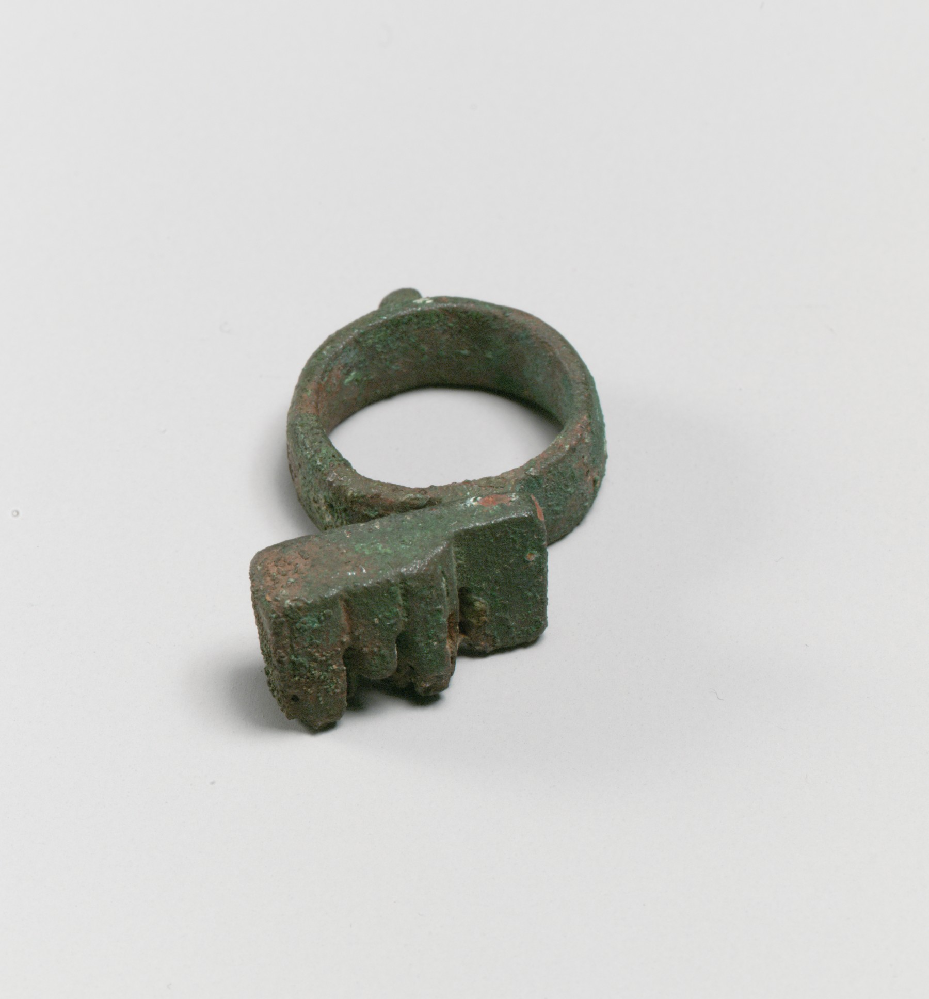
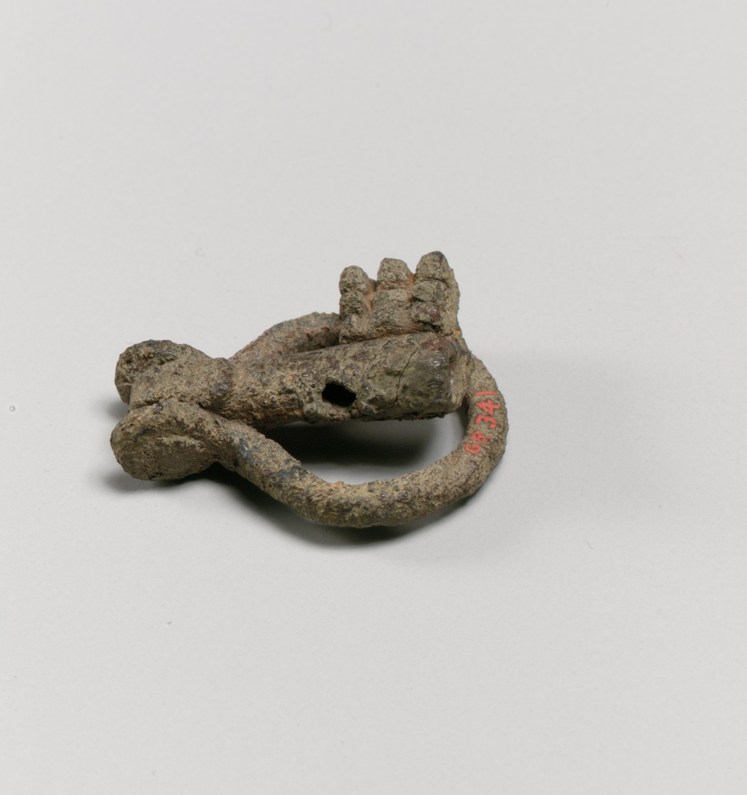
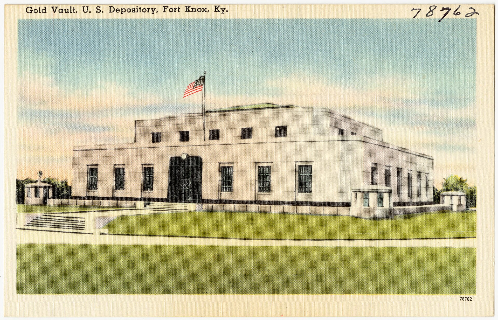

Your keys,
on one stick
KleyKnox keeps your SSH and GPG keys encrypted on a USB stick and unlocks them all with one passphrase, for as long as you choose.
$ kleyknox unlock --ttl 2h KleyKnox passphrase: •••••••••••••••••••••• gpg mail unlocked for 2h ssh personal unlocked for 2h gpg old unlocked for 2h $ ssh-add -l 256 SHA256:Sh7v79IB+mAer5DxBTUB5LRytwhi1ZWISdKnxwoTQ+E kleyknox:personal (ED25519) $
age-encryption.org/v1 -> scrypt iY2iEM6ALAVPbQ84Ro0AkA 20 nW1Lq0b2kR9x3cXvT6pYQ8hZ0fJmA4sDk7GuEo5wIr --- 4bWq0tYk2mPz8xXc1vN6sJ3dL9hR5fQ0gA7eKuYo 7c 2f 91 e4 0b a8 55 3d c1 9e 6f 02 b7 48 d3 1a e0 64 af 13 78 c2 5b 9d 04 f6 21 8e 37 ca 90 5e b1 0d 6a f3 82 47 ec 19 5f a0 3b d8 76 2c e9 41
On the stick
The SSH key, encrypted with scrypt at 220. It opens without KleyKnox too: age -d personal.age.
How it works
- gpgmaillocked
- sshpersonallocked
- gpgoldlocked
/run/media/nicholas/STICK/kleyknox
First, plug in the stick.
2 of 3 entries open · 1.3 s each
One passphrase opens them all.
- gpgmail1 h 59 min
- sshpersonal1 h 59 min
- gpgold1 h 59 min
ssh-agent · gpg-agent
The keys go into the agents.
- gpgmaillocked at 18:00
- sshpersonallocked at 18:00
- gpgoldlocked at 18:00
timer: kleyknox-expire-mail.timer
When time is up, they lock.
In the details
$ kleyknox lock locked gpg mail locked ssh personal locked gpg old $ ssh-add -l The agent has no identities.
Lock any timekleyknox lock closes everything at once.
EverywhereBinaries for Linux, Windows and macOS.
Fixed costThe same scrypt on every PC.
Timed15 min, 1, 2 or 8 hours.
Open formatsage, OpenSSH and OpenPGP: nothing proprietary.
No shortcutsUnder 12 characters, it says no.
Modern keysEd25519 for SSH, Cv25519 for GPG.
A key, a vault
Kley comes from κλείς, the Greek key: a toothed iron that opened one door only. Knox is Fort Knox, where the United States has locked away its gold since 1937. KleyKnox puts the two together: the key goes in the vault, and the vault goes in your pocket.


It speaks their language
No format of its own: the keys stay readable by these tools, even without KleyKnox.
ssh-agent, Ed25519 keys
gpg-agent, OpenPGP keys
scrypt encryption
GnuPG on Windows
through GnuPG
the timer that locks

The commands
Eight commands, three moments. What you read here is what you type.
Preparing the stick
kleyknox init <mount>- once
- Creates the
kleyknox/folder on the stick. kleyknox new <name>- Ed25519
- Generates an SSH key straight into the vault.
kleyknox import <name> <file>- --force
- Copies in an SSH key you already have.
GPG keys
kleyknox gpg-new <name> "<uid>"- Cv25519
- A new key with a random GPG passphrase only the stick knows.
kleyknox gpg-import <name> <key>- from keyring
- Brings in an existing GPG key.
Every day
kleyknox unlock [name]- --ttl 2h
- One passphrase, every key, for the time you choose.
kleyknox lock [name]- now
- Locks before the time is up.
kleyknox list- status
- What is on the stick and what is open.
Install
git clone https://github.com/Nidhil-stack/kleyknox
cd kleyknox && cargo install --path .Or download a binary from the releases on GitHub.
Linux, Windows or macOS · OpenSSH 8.2 and GnuPG 2.4
Binaries on the releases page